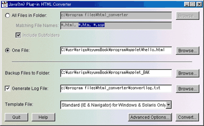
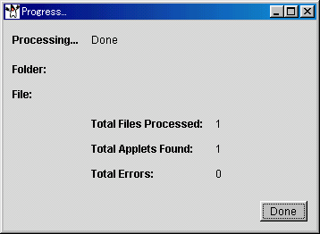
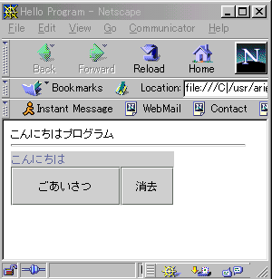

■ <APPLET>タグ
アプレットをWebページに埋めこむには、<APPLET>タグと<PARAM>タグを使います。ここではその属性について説明します。
ブラウザにJava実行環境がなく、ブラウザが<APPLET>タグと<PARAM>タグを理解できなかった時は、これらを無視します。<APPLET>と</APPLET>の間に別のHTMLタグを指定しておくと、アプレットが実行できなかった時、代わりにそちらを解釈、実行、表示します。一方で、<APPLET>タグを理解するブラウザはこの部分の別のHTMLタグを無視します。
●<APPLET>タグの属性
・code = アプレットのクラスファイル名(必須)
・code = アプレットのクラス名(archives属性を指定した時はこちらが必須)
通常codeにはアプレットのクラスファイル(バイトコードファイル)名を指定します。codebase属性で指定したディレクトリからの相対位置でファイルを指定します。codepathを指定しないと、HTML文書と同じディレクトリからの相対位置となります。
実行するアプレットがJavaアーカイブファイル(JAR)の形にまとめられている場合は、codeにクラス名を指定し、合わせてarchivesを指定します。
・width = ピクセル数(必須)
・height = ピクセル数(必須)
アプレットが占める表示領域の幅と高さをピクセル単位で指定します。
・arichves = JARファイル名 [ + JARファイル名 .... ]
codeでアプレットのクラス名を指定した時、アプレットを実行するために必要なファイルが含まれるJavaアーカイブファイル(JARファイル)名を指定します。複数のJARファイルを指定する時は+でつなげます。
・codebase = URLによるディレクトリ名
クラスファイルがどのディレクトリにあるかをURL形式で指定します。code属性で指定したファイルは、ここからの相対位置となります。
・alt = 文字列
アプレットが実行できなかった時、代わりに表示する文字列を指定します。
・name = 文字列
アプレットの名前(インスタンス名)を指定します。同じWebページ上のアプレットがコミュニケートするような場合に使います。
・align = 配置方式
アプレットの表示域と回りのページ要素との位置関係を指定します(left、right、top、texttop、middle、absmiddle、baseline、bottom、absbottom)。値は、IMGタグの属性と同じ意味です。
・vspace = ピクセル数
・hspace = ピクセル数
アプレット表示領域の上下(vspace)と右左(hspace)のスペースの大きさを指
定します。IMGタグのvspace、hspaceと同じ意味です。
■ <PARAM>タグ
アプレットの実行の際に、アプレットに対して引数を渡すのが、<PARAM>タ
グです。<PARAM>タグは<APPLET>と</APPLET>の間に指定します。
<PARM>タグで指定したパラメータは、アプレットの中でgetParameterメソッ
ドを使って参照できます。
●<PARAM>タグの属性
・name = 引数の名前
引数の名前を指定します。大小文字の区別はしません。
・value = パラメータの値
値は文字列としてアプレットに渡されます。大小文字の区別をします。
<PARAM name=parameterA value=123>
引数の値は文字列として渡されるので、それを数値として扱う場合はラップクラスのメソッドを使って、必要なデータ型に変換します。次は、引数parameterAの値をIntergerクラスのparseIntメソッドを使って整数に変換する例です。
String str;
int value;
.....
public void init(){
str = getParameter("parameterA");
if (str == null){ //確当するパラメータが指定されなかったら
str = "1000"; //デフォルト値を使う
}
try{
value = Integer.parseInt(str); //strを整数に変換する
} catch (NumberFormatException e) {
value = 1000; /* エラーの時の処理、例えばデフォルト値を設定 */}
}
引数の文字列が整数に変換できなかった場合、あるいは引数が与えられなかっ
た場合のことを想定して、必ず引数のデフォルト値をアプレット内で用意して
おきます。
■ Javaプラグイン
アプレットを実行するには、Java実行環境(Java VM)をもったWebブラウザが必要です。<APPLET>タグでページに埋め込まれたアプレットは，通常ブラウザ内蔵のJava VMを使って実行されます。しかし，内蔵VMのバージョンが古いため，ページ上のアプレットを実行できないことがあります。このような問題を避け、どのブラウザを使ってもWebページに置かれたアプレットが実行できるように、Javaプラグインが提供されています。
●Javaプラグインの働き
プラグインとは、ブラウザの機能を拡張するプログラムのことで、音声や動画を再生する機能をブラウザに追加するなど、数多くのプラグインがあります。Javaプラグインはそのひとつで、アプレットを実行するためのプログラムです。
<APPLET>タグで指定されたアプレットは，Webブラウザ内に組み込まれたJava VMで実行されますが、アプレットを作成したJavaのバージョンとブラウザ内のJava実行環境のバージョンが一致するとは限りません。一般的に、ブラウザへの最新Java実行環境の対応が遅れがちで、ページ上のアプレットが実行できないことがしばしばあります。
プラグインの場合、必要に応じて自動的に最新Java VMをダウンロードするので、バージョン違いに悩まされる問題を解決できます。アプレットをプラグインで実行するように指定したWebページをブラウザ上で開くと、Javaプラグインがすでにインストールされている場合はそのままアプレットが実行されます。もし、Javaプラグインがないと、サンマイクロシステムからJavaプラグインをインストールするためのダイアログボックスが表示され、ユーザがインストールに同意すると、インストーラーが自動的に起動されます(この場合、もちろん、インターネットへ接続されている必要があります)。
プラグインについては，Java Plug-in クイックスタートガイドを参照してください。
●HTMLコンバータ
プラグインで実行するアプレットをWebページに組み込むには、<APPLET>タグとは別のタグを使います。使うタグは、ブラウザによって異なり、Netscapeブラウザ用には<EMBED>と</EMBED>タグを、Internet Explorer用には<OBJECT>
と</OBJECT>タグを使います。
ユーザがどちらのブラウザを使っているかに関係なく、プラグインアプレットを実行できるようHTMLファイルを作るのは、少々やっかいです。そのため、<APPLET>タグでアプレットを組み込んだHTMLファイルを、プラグインアプレットへ変換するプログラム(HTMLコンバータ)が提供されています。これを使えば、HTMLファイルから、アプレットをプラグインで実行するためのHTMLファイルを簡単に作ることができます。
HTMLコンバータは、 Sun Microsystemsからダウンロードできます。

HTMLコンバータを起動すると、図のようなウィンドウが現れます。コンバートするファイルを指定して、「Convert」ボタンをクリックすると変換が行われ、変換完了のウィンドウが表示され、変換の状態を知らせます。

元のHTMLファイルは、ディレクトリ名_BAKという名前の新しいディレクトリにコピーして保存されます。この例だとapplet_BAKディレクトリが作られ、そこにコピーされます。
●プラグインアプレットのための<EMBED>タグと<OBJECT>タグ
HTMLコンバータを使えば、プラグインアプレット用のHTMLファイルが自動的に作られるので、実際にタグを記述する必要はありません。<EMBED>タグ、あるいは<OBJECT>タグがどのように記述されるか、その概要を説明します。
次の<APPLET>タグ
<APPLET code="HelloApplet.class" width=180 height=60>
を、Netscapeブラウザ用の<EMBED>タグに置き換えたもの、ならびにInternet Explorer用の<OBJECT>タグに置き換えたものを下に示します(Java Plug-in Software 1.2での例)。
◆<EMBED>タグの場合
<EMBED type="application/x-java-applet;version=1.1"
java_CODE = "HelloApplet.class"
WIDTH = 180 HEIGHT = 60
pluginspage="http://java.sun.com/products/plugin/1.1.1/plugin-install.html">
</EMBED>
type属性にコンテントタイプが指定されます。クラスファイルはjava_CODE属性で、その他の<APPLET>タグの属性はそのまま<EMBED>タグの属性として指定します。pluginspage属性では、どこからJavaプラグインをダウンロードするかのURLを指定します。また、この例にはありませんが、引数をアプレットに渡すには、パラメータ名を<EMBED>タグの属性名、値を文字列として指定します(属性名="値")。
◆<OBJECT>タグの場合
<OBJECT classid="clsid:8AD9C840-044E-11D1-B3E9-00805F499D93"
WIDTH = 180 HEIGHT = 60
codebase="http://java.sun.com/products/plugin/1.1.1/jinstall-111-win32.cab#Version=1,1,1,0">
<PARAM NAME = CODE VALUE = "HelloApplet.class" >
<PARAM NAME="type" VALUE="application/x-java-applet;version=1.1">
</OBJECT>
classid属性は、Javaプラグインを識別する番号で、常に同じ値です。<APPLET>タグの属性の内、width、height、align属性は<OBJECT>タグの属性として指定します。それ以外の<APPLET>タグの属性は、<PARM>タグで、属性名をname属性に、値をvalue属性に指定します。
codebase属性にはJavaプラグインをダウンロードするURLを指定します。
コンテントタイプは、<PARM>タグのひとつとして指定します。また、引数をアプレットに渡すには、<OBJECT>と</OBJECT>の間に<PARM>タグを指定します。
NetscapeとInternet Explorer(IE)のどちらのブラウザででも、同じようにプラグインアプレットを実行できるHTMLファイルは、基本的には上の2つの記述を合わせたものですが、両ブラウザのタグ解釈の違いから、少し工夫が必要になります。
Netscapeブラウザは<OBJECT>タグを無視しますが、Internet Explorerは<EMBED>タグを無視しないのです。そこで、IEが無視する<COMMENT>タグを使って、<EMBED>タグを囲んで<EMBED>タグをIEが無視するようにします。
<OBJECT classid="clsid:8AD9C840-044E-11D1-B3E9-00805F499D93"
WIDTH = 180 HEIGHT = 60
codebase="http://java.sun.com/products/plugin/1.1.1/jinstall-111-win32.cab#Version=1,1,1,0">
<PARAM NAME = CODE VALUE = "HelloApplet.class" >
<PARAM NAME="type" VALUE="application/x-java-applet;version=1.1">
<COMMENT>
<EMBED type="application/x-java-applet;version=1.1"
java_CODE = "HelloApplet.class"
WIDTH = 180 HEIGHT = 60
pluginspage="http://java.sun.com/products/plugin/1.1.1/plugin-install.html">
<NOEMBED></COMMENT></NOEMBED></EMBED>
</OBJECT>
HTMLコンバータを使えば、プラグインアプレット用のHTMLファイルが自動的に作成されるので、<APPLET>と<PARAM>タグで記述したHTMLファイルさえ用意すれば、上で述べたようなプラグイン用の指定はHTMLコンバータに任せておけます。

<APPLET>を含んだHTMLファイルをHTMLコンバータで変換し、NetScapeブラウザでアプレットを実行したのが、左図です。
●APPLETタグでJavaプラグインを使う
Windows版のInternet Explorerでは，<APPLET>タグで埋め込んだアプレットを内蔵のJava VMではなく，Plug-inで実行することができます。それには，次のページで公開されているソフトウェアをダウンロードして使います。
Java VM Selector for IE
http://homepage1.nifty.com/emk/vmselect.html
このソフトウェアをインストールするだけで，<APPLET>タグで埋め込んだアプレットがPlug-inのJava VMで実行されます。
■ Macintoshの特殊事情
Sun Microsystems社はMac OS用のJava環境を提供していません。
Apple社が，MRJ(Mac OS Runtime for Java)の名前で開発しています。
●MRJ(Mac OS Runtime for Java)
Mac OS用のJava環境の最新版はMRJ2.2.5で，Java1.1.8の仕様に対応しています。
Swingはサポートしていますが，Java2以降で導入された新しい機能を使ったJavaプログラムをMRJ環境で実行することはできません。
MRJ2.2.5は次のページからダウンロードできます。
Mac OS Runtime for Java
(http://www.apple.com/java)
MRJ2.2.5をインストールするには，次のマシン環境が必要です。
- PowerPCベースのアップル社Macintoshコンピュータ。
- Mac OS 8.1以降
- 最低40MBのRAM
- 最低13MBのハードディスクの空き領域
Apple社は，Mac OS X以前のOS(つまり，Mac OS 8や9)上で，Java2をサポートする予定はないと，そのWebページで述べています。つまり，Mac OS 8や9はいつまでもJava1.1.8対応で，Java2を使うなら，Mac OS Xを使えということでしょう。
●ブラウザでのアプレットの実行
Netscape用のMRJ Plug-inが次のページからダウンロードできます。
MRJ Plugin for
Netscape4.X and Netscape 6 Browsers
(http://www.mozilla.org/oji/MRJPlugin.html)
Mac OS用上のMicrosoft Internet Explorerは，自身のJava実行環境にMRJを使っているので，[編集]メニューの[初期設定]の[Java]項目でJavaを有効にすれば，MRJの実行環境が動きます。
●Mac OS X Java Runtime Environment
Mac OS XはJava2 Standard Edition(J2SE) 1.3をサポートしています。
WindowsやLinuxに比べて遅れがちであったMac OS上でのJava環境が，これでやっと追い付いたという感じです。
詳しくは次のページを見てください。
Mac OS X Java Runtime Environment
(http://developer.apple.com/java/)
Ariga, Taeko
Last modified: Aug 24, 18:28:00 JST 2001